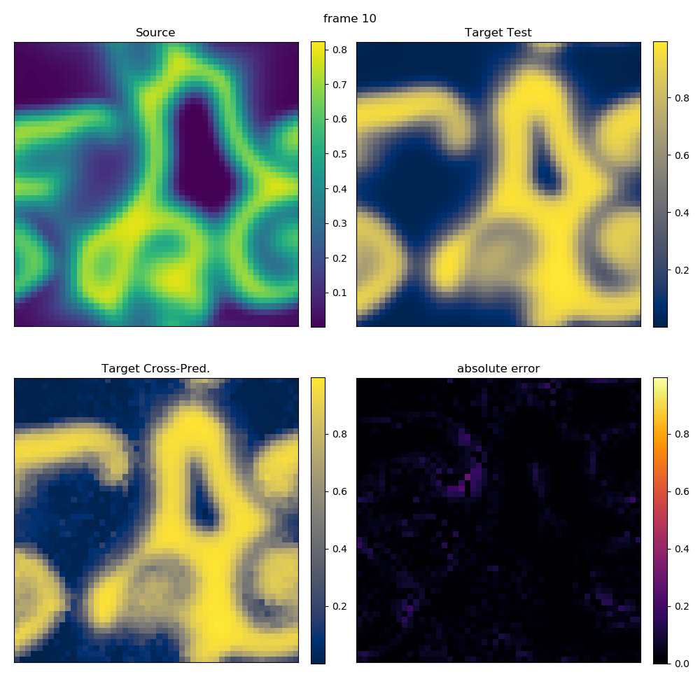

Spatio-Temporal Prediction Examples
In this page we are simply running files from the examples folder of the TimeseriesPrediction package.
This is how you can (programmatically) find this folder:
using TimeseriesPrediction exdir = dirname(dirname(pathof(TimeseriesPrediction)))*"/examples"
Temporal Prediction: Kuramoto-Sivashinsky
(this requires FFTW to be installed)
This example predicts the temporal evolution of a one-dimensional field U, along with a time vector T, which has to be represented as vectors of vectors. Where the field comes from does not matter, but to make the example runnable we load one of the test systems of TimeseriesPrediction.
In this example we use the solution of Kuramoto Sivashinsky equation.
Importantly, the results are compared with the "real" evolution of the system.
In the plots, the x axis is space and y axis is time.
Produce field U (Kuramoto Sivashinsky)
using PyPlot using TimeseriesPrediction testdir = dirname(dirname(pathof(TimeseriesPrediction)))*"/test" @assert isdir(testdir) include(testdir*"/ks_solver.jl") Ntrain = 10000 p = 100 N = Ntrain + p U, T = KuramotoSivashinsky(64, 22, N÷4, 0.25) summary(U)
"10101-element Array{Array{Float64,1},1}"
Temporal prediction of field U
Q = length(U[1]) # spatial length pool = U[1:Ntrain] test = U[Ntrain:N] γ = 10 τ = 1 B = 10 k = 1 ntype = FixedMassNeighborhood(4) method = AverageLocalModel() em = cubic_shell_embedding(pool, γ,τ,B,k,PeriodicBoundary()) pcaem= PCAEmbedding(pool,em) @time pred = temporalprediction(pool,pcaem, p;ntype=ntype, method=method, progress = false) err = [abs.(test[i]-pred[i]) for i=1:p+1] println("Maximum error: ", maximum(maximum(e) for e in err))
3.203749 seconds (4.12 M allocations: 278.923 MiB, 12.76% gc time) Maximum error: 7.489722699875914
Plot the result
Deduce field extremal values
vmax = max(maximum(maximum(s) for s in test), maximum(maximum(s) for s in pred)) vmin = min(minimum(minimum(s) for s in test), minimum(minimum(s) for s in pred))
-5.275917990623304
Transform data for imshow
ptest = cat(test..., dims = 2) ppred = cat(pred..., dims = 2) perr = cat(err..., dims = 2)
64×101 Array{Float64,2}: 0.0 0.117557 0.093332 0.0995133 … 0.176435 0.428045 1.12381 0.0 0.0844138 0.0624008 0.0627831 1.03725 0.634373 0.149066 0.0 0.0487361 0.0268789 0.0249753 1.51933 1.35378 1.12772 0.0 0.0430553 0.00531474 0.00402415 1.65941 1.72697 1.76369 0.0 0.0550993 0.00717697 0.00488774 1.54245 1.80927 2.07716 0.0 0.0513383 0.0131881 0.00198239 … 1.27599 1.69305 2.13234 0.0 0.0394528 0.0126422 0.0254385 0.977606 1.4845 2.02576 0.0 0.0222963 0.0454558 0.0583722 0.749201 1.27235 1.84884 0.0 0.0113543 0.0875975 0.102984 0.625136 1.10491 1.6342 0.0 0.000283291 0.121417 0.137955 0.64153 1.04758 1.47385 ⋮ ⋱ ⋮ 0.0 0.0806688 0.0717503 0.0555449 … 3.34076 2.8054 2.20618 0.0 0.103009 0.0765522 0.0773288 4.80043 4.36622 3.83916 0.0 0.0407499 0.0130141 0.0274053 5.84244 5.59799 5.24194 0.0 0.00136207 0.0219034 0.084694 6.28648 6.2951 6.18903 0.0 0.0325506 0.0315577 0.0891074 6.06503 6.34578 6.52844 0.0 0.0460529 0.0990307 0.0424581 … 5.23427 5.75757 6.21841 0.0 0.0623423 0.114259 0.138285 3.96122 4.65298 5.33638 0.0 0.0751481 0.135083 0.139311 2.47919 3.24312 4.04871 0.0 0.100207 0.134398 0.130669 1.03333 1.76527 2.57602
plot plot plot
fig = figure(figsize=(8,8)) ax1 = subplot2grid((3,1), (0,0)) ax2 = subplot2grid((3,1), (1,0)) ax3 = subplot2grid((3,1), (2,0)); im1 = ax1[:imshow](ppred, cmap="viridis", vmin = vmin, vmax = vmax, aspect = "auto", extent = (T[Ntrain], T[N], 1, Q)) im2 = ax2[:imshow](ptest, cmap="viridis", vmin = vmin, vmax = vmax, aspect = "auto", extent = (T[Ntrain], T[N], 1, Q)) im3 = ax3[:imshow](perr, cmap="inferno", vmin = 0, vmax = vmax-vmin, aspect = "auto", extent = (T[Ntrain], T[N], 1, Q)) for (j, (im, ax)) in enumerate(zip([im1,im2,im3], [ax1,ax2,ax3])) colorbar(im, ax = ax, fraction=0.04, pad=0.01)# format="%.1f") if j < 3 ax[:set_xticklabels]([]) end end ax1[:set_title]("Prediction") ax2[:set_title]("Real evolution") ax3[:set_title]("Absolute error") ax2[:set_ylabel]("space") ax3[:set_xlabel]("time") tight_layout(w_pad=0.1, h_pad=0.00001)
┌ Warning: `getindex(o::PyObject, s::Symbol)` is deprecated in favor of dot overloading (`getproperty`) so elements should now be accessed as e.g. `o.s` instead of `o[:s]`. │ caller = top-level scope at make.jl:28 └ @ Core ~/build/JuliaDynamics/TimeseriesPrediction.jl/docs/make.jl:28 ┌ Warning: `getindex(o::PyObject, s::Symbol)` is deprecated in favor of dot overloading (`getproperty`) so elements should now be accessed as e.g. `o.s` instead of `o[:s]`. │ caller = top-level scope at make.jl:28 └ @ Core ~/build/JuliaDynamics/TimeseriesPrediction.jl/docs/make.jl:28 ┌ Warning: `getindex(o::PyObject, s::Symbol)` is deprecated in favor of dot overloading (`getproperty`) so elements should now be accessed as e.g. `o.s` instead of `o[:s]`. │ caller = top-level scope at make.jl:28 └ @ Core ~/build/JuliaDynamics/TimeseriesPrediction.jl/docs/make.jl:28 ┌ Warning: `getindex(o::PyObject, s::Symbol)` is deprecated in favor of dot overloading (`getproperty`) so elements should now be accessed as e.g. `o.s` instead of `o[:s]`. │ caller = top-level scope at none:5 [inlined] └ @ Core ./none:5 ┌ Warning: `getindex(o::PyObject, s::Symbol)` is deprecated in favor of dot overloading (`getproperty`) so elements should now be accessed as e.g. `o.s` instead of `o[:s]`. │ caller = top-level scope at make.jl:28 └ @ Core ~/build/JuliaDynamics/TimeseriesPrediction.jl/docs/make.jl:28 ┌ Warning: `getindex(o::PyObject, s::Symbol)` is deprecated in favor of dot overloading (`getproperty`) so elements should now be accessed as e.g. `o.s` instead of `o[:s]`. │ caller = top-level scope at make.jl:28 └ @ Core ~/build/JuliaDynamics/TimeseriesPrediction.jl/docs/make.jl:28 ┌ Warning: `getindex(o::PyObject, s::Symbol)` is deprecated in favor of dot overloading (`getproperty`) so elements should now be accessed as e.g. `o.s` instead of `o[:s]`. │ caller = top-level scope at make.jl:28 └ @ Core ~/build/JuliaDynamics/TimeseriesPrediction.jl/docs/make.jl:28 ┌ Warning: `getindex(o::PyObject, s::Symbol)` is deprecated in favor of dot overloading (`getproperty`) so elements should now be accessed as e.g. `o.s` instead of `o[:s]`. │ caller = top-level scope at make.jl:28 └ @ Core ~/build/JuliaDynamics/TimeseriesPrediction.jl/docs/make.jl:28 ┌ Warning: `getindex(o::PyObject, s::Symbol)` is deprecated in favor of dot overloading (`getproperty`) so elements should now be accessed as e.g. `o.s` instead of `o[:s]`. │ caller = top-level scope at make.jl:28 └ @ Core ~/build/JuliaDynamics/TimeseriesPrediction.jl/docs/make.jl:28

Cross Prediction: Barkley Model
This example cross-predicts a field U from a field V. Both fields have to be represented as vectors of matrices. Where the fields come from does not matter, but to make the example runnable we load one of the test systems of TimeseriesPrediction.
This example uses cubic shell embedding and a linear Barkley model.
Importantly, the results are compared with the "real" evolution of the system.
Simulate a test system
using PyPlot using TimeseriesPrediction testdir = dirname(dirname(pathof(TimeseriesPrediction)))*"/test" @assert isdir(testdir) include(testdir*"/system_defs.jl") Ttrain = 500 Ttest = 10 T = Ttrain + Ttest U, V = barkley(T;tskip=100, ssize=(50,50)) summary(U)
"510-element Array{Array{Float64,2},1}"
Cross predict field U from field V
γ = 5 τ = 1 B = 1 k = 1 bc = PeriodicBoundary() source_train = V[1: Ttrain] target_train = U[1: Ttrain] source_pred = V[Ttrain - γ*τ + 1: T] target_test = U[Ttrain + 1: T] em = cubic_shell_embedding(source_train, γ,τ,B,k,bc) pcaem = PCAEmbedding(source_train, em; maxoutdim=5) # PCA speeds things up! @time target_pred = crossprediction(source_train, target_train, source_pred, em; progress = false) err = [abs.(target_test[i]-target_pred[i]) for i=1:Ttest] println("Maximum error: ", maximum(maximum(e) for e in err))
50.487440 seconds (1.86 M allocations: 1.178 GiB, 1.31% gc time) Maximum error: 0.2819220583817802
Plot prediction
Deduce field extremal values
source_max = maximum(maximum(s) for s in source_pred) target_max = max(maximum(maximum(s) for s in target_test), maximum(maximum(s) for s in target_pred)) source_min = minimum(minimum(s) for s in source_pred) target_min = min(minimum(minimum(s) for s in target_test), minimum(minimum(s) for s in target_pred))
8.006923371978363e-5
Plot various predicted frames (only the last one shown here)
for i in [1, length(err)÷2, length(err)] fig = figure(figsize=(10,10)) ax1 = subplot2grid((2,2), (0,0)) ax2 = subplot2grid((2,2), (0,1)) ax3 = subplot2grid((2,2), (1,0)) ax4 = subplot2grid((2,2), (1,1)) im1 = ax1[:imshow](source_pred[i], cmap="viridis", vmin = source_min, vmax = source_max) im2 = ax2[:imshow](target_test[i], cmap="cividis", vmin = target_min, vmax = target_max) im3 = ax3[:imshow](target_pred[i], cmap="cividis", vmin = target_min, vmax = target_max) im4 = ax4[:imshow](err[i], cmap="inferno", vmin = 0, vmax = target_max - target_min) for (im, ax) in zip([im1,im2,im3,im4], [ax1,ax2,ax3,ax4]) ax[:get_xaxis]()[:set_ticks]([]) ax[:get_yaxis]()[:set_ticks]([]) colorbar(im, ax = ax, fraction=0.046, pad=0.04)#, format="%.1f") end ax1[:set_title]("Source") ax2[:set_title]("Target Test") ax3[:set_title]("Target Cross-Pred.") ax4[:set_title]("absolute error") tight_layout(w_pad=0.6, h_pad=0.00001) suptitle("frame $i") end
┌ Warning: `getindex(o::PyObject, s::Symbol)` is deprecated in favor of dot overloading (`getproperty`) so elements should now be accessed as e.g. `o.s` instead of `o[:s]`. │ caller = top-level scope at none:8 └ @ Core ./none:8 ┌ Warning: `getindex(o::PyObject, s::Symbol)` is deprecated in favor of dot overloading (`getproperty`) so elements should now be accessed as e.g. `o.s` instead of `o[:s]`. │ caller = top-level scope at none:9 [inlined] └ @ Core ./none:9 ┌ Warning: `getindex(o::PyObject, s::Symbol)` is deprecated in favor of dot overloading (`getproperty`) so elements should now be accessed as e.g. `o.s` instead of `o[:s]`. │ caller = top-level scope at none:10 [inlined] └ @ Core ./none:10 ┌ Warning: `getindex(o::PyObject, s::Symbol)` is deprecated in favor of dot overloading (`getproperty`) so elements should now be accessed as e.g. `o.s` instead of `o[:s]`. │ caller = top-level scope at none:11 [inlined] └ @ Core ./none:11 ┌ Warning: `getindex(o::PyObject, s::Symbol)` is deprecated in favor of dot overloading (`getproperty`) so elements should now be accessed as e.g. `o.s` instead of `o[:s]`. │ caller = top-level scope at none:13 [inlined] └ @ Core ./none:13 ┌ Warning: `getindex(o::PyObject, s::Symbol)` is deprecated in favor of dot overloading (`getproperty`) so elements should now be accessed as e.g. `o.s` instead of `o[:s]`. │ caller = top-level scope at none:13 [inlined] └ @ Core ./none:13 ┌ Warning: `getindex(o::PyObject, s::Symbol)` is deprecated in favor of dot overloading (`getproperty`) so elements should now be accessed as e.g. `o.s` instead of `o[:s]`. │ caller = top-level scope at none:14 └ @ Core ./none:14 ┌ Warning: `getindex(o::PyObject, s::Symbol)` is deprecated in favor of dot overloading (`getproperty`) so elements should now be accessed as e.g. `o.s` instead of `o[:s]`. │ caller = top-level scope at none:14 └ @ Core ./none:14 ┌ Warning: `getindex(o::PyObject, s::Symbol)` is deprecated in favor of dot overloading (`getproperty`) so elements should now be accessed as e.g. `o.s` instead of `o[:s]`. │ caller = top-level scope at none:17 [inlined] └ @ Core ./none:17 ┌ Warning: `getindex(o::PyObject, s::Symbol)` is deprecated in favor of dot overloading (`getproperty`) so elements should now be accessed as e.g. `o.s` instead of `o[:s]`. │ caller = top-level scope at none:18 [inlined] └ @ Core ./none:18 ┌ Warning: `getindex(o::PyObject, s::Symbol)` is deprecated in favor of dot overloading (`getproperty`) so elements should now be accessed as e.g. `o.s` instead of `o[:s]`. │ caller = top-level scope at none:19 [inlined] └ @ Core ./none:19 ┌ Warning: `getindex(o::PyObject, s::Symbol)` is deprecated in favor of dot overloading (`getproperty`) so elements should now be accessed as e.g. `o.s` instead of `o[:s]`. │ caller = top-level scope at none:20 [inlined] └ @ Core ./none:20

Temporal Prediction: Periodic Nonlinear Barkley Model
This example predicts the temporal evolution of a field U, which has to be represented as vectors of matrices. Where the field comes from does not matter, but to make the example runnable we load one of the test systems of TimeseriesPrediction.
This example uses light cone embedding and a nonlinear Barkley model.
Importantly, the results are compared with the "real" evolution of the system.
Simulate a test system
using PyPlot using TimeseriesPrediction testdir = dirname(dirname(pathof(TimeseriesPrediction)))*"/test" @assert isdir(testdir) include(testdir*"/system_defs.jl") Ttrain = 300 Ttest = 5 T = Ttrain + Ttest init = [ 0.6241 0.589685 0.668221 0.194882 0.687645 0.656243 0.702544 0.476963 0.00236098 0.636111 0.821854 0.868514 0.242682 0.2588 0.30552 0.580972 0.355305 0.0805268 0.501724 0.728142 0.297559 0.708676 0.583552 0.65363 0.555639] U, V = barkley(T; tskip=100, ssize=(50,50), init = init) summary(U)
"305-element Array{Array{Float64,2},1}"
Temporal prediction of field U
γ = 2 τ = 1 r = 1 c = 1 bc = PeriodicBoundary() pool = U[1 : Ttrain] test = U[ Ttrain : T] em = light_cone_embedding(pool, γ,τ,r,c,bc) pcaem = PCAEmbedding(pool, em; maxoutdim=5) # PCA speeds things up! @time pred = temporalprediction(pool, em, Ttest; progress = false) err = [abs.(test[i]-pred[i]) for i=1:Ttest+1] println("Maximum error: ", maximum(maximum(e) for e in err))
25.033708 seconds (1.72 M allocations: 931.762 MiB, 1.73% gc time) Maximum error: 0.2934269941090367
Plot prediction
Deduce field maximum values
vmax = max(maximum(maximum(s) for s in test), maximum(maximum(s) for s in pred)) vmin = min(minimum(minimum(s) for s in test), minimum(minimum(s) for s in pred))
0.0015249975046802136
plot plot plot
for i in [1, length(err)÷2, length(err)] fig = figure(figsize=(10,3)) ax1 = subplot2grid((1,3), (0,0)) ax2 = subplot2grid((1,3), (0,1)) ax3 = subplot2grid((1,3), (0,2)) im1 = ax1[:imshow](pred[i], cmap="viridis", vmin = vmin, vmax = vmax) im2 = ax2[:imshow](test[i], cmap="viridis", vmin = vmin, vmax = vmax) im3 = ax3[:imshow](err[i], cmap="inferno", vmin = 0, vmax = vmax-vmin) for (im, ax) in zip([im1,im2,im3], [ax1,ax2,ax3]) ax[:get_xaxis]()[:set_ticks]([]) ax[:get_yaxis]()[:set_ticks]([]) colorbar(im, ax = ax, fraction=0.046, pad=0.04)#, format="%.1f") end ax1[:set_title]("Prediction") ax2[:set_title]("Real evolution") ax3[:set_title]("Absolute error") suptitle("frame $i") tight_layout(w_pad=0.6, h_pad=0.00001) subplots_adjust(top=0.75) end
┌ Warning: `getindex(o::PyObject, s::Symbol)` is deprecated in favor of dot overloading (`getproperty`) so elements should now be accessed as e.g. `o.s` instead of `o[:s]`. │ caller = top-level scope at none:8 [inlined] └ @ Core ./none:8 ┌ Warning: `getindex(o::PyObject, s::Symbol)` is deprecated in favor of dot overloading (`getproperty`) so elements should now be accessed as e.g. `o.s` instead of `o[:s]`. │ caller = top-level scope at none:9 └ @ Core ./none:9 ┌ Warning: `getindex(o::PyObject, s::Symbol)` is deprecated in favor of dot overloading (`getproperty`) so elements should now be accessed as e.g. `o.s` instead of `o[:s]`. │ caller = top-level scope at none:10 [inlined] └ @ Core ./none:10 ┌ Warning: `getindex(o::PyObject, s::Symbol)` is deprecated in favor of dot overloading (`getproperty`) so elements should now be accessed as e.g. `o.s` instead of `o[:s]`. │ caller = top-level scope at none:12 [inlined] └ @ Core ./none:12 ┌ Warning: `getindex(o::PyObject, s::Symbol)` is deprecated in favor of dot overloading (`getproperty`) so elements should now be accessed as e.g. `o.s` instead of `o[:s]`. │ caller = top-level scope at none:12 [inlined] └ @ Core ./none:12 ┌ Warning: `getindex(o::PyObject, s::Symbol)` is deprecated in favor of dot overloading (`getproperty`) so elements should now be accessed as e.g. `o.s` instead of `o[:s]`. │ caller = top-level scope at none:13 └ @ Core ./none:13 ┌ Warning: `getindex(o::PyObject, s::Symbol)` is deprecated in favor of dot overloading (`getproperty`) so elements should now be accessed as e.g. `o.s` instead of `o[:s]`. │ caller = top-level scope at none:13 └ @ Core ./none:13 ┌ Warning: `getindex(o::PyObject, s::Symbol)` is deprecated in favor of dot overloading (`getproperty`) so elements should now be accessed as e.g. `o.s` instead of `o[:s]`. │ caller = top-level scope at none:16 [inlined] └ @ Core ./none:16 ┌ Warning: `getindex(o::PyObject, s::Symbol)` is deprecated in favor of dot overloading (`getproperty`) so elements should now be accessed as e.g. `o.s` instead of `o[:s]`. │ caller = top-level scope at none:17 [inlined] └ @ Core ./none:17 ┌ Warning: `getindex(o::PyObject, s::Symbol)` is deprecated in favor of dot overloading (`getproperty`) so elements should now be accessed as e.g. `o.s` instead of `o[:s]`. │ caller = top-level scope at none:18 [inlined] └ @ Core ./none:18

This page was generated using Literate.jl.